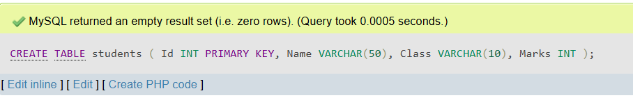
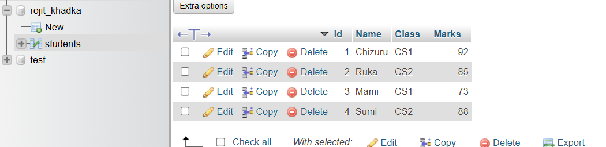
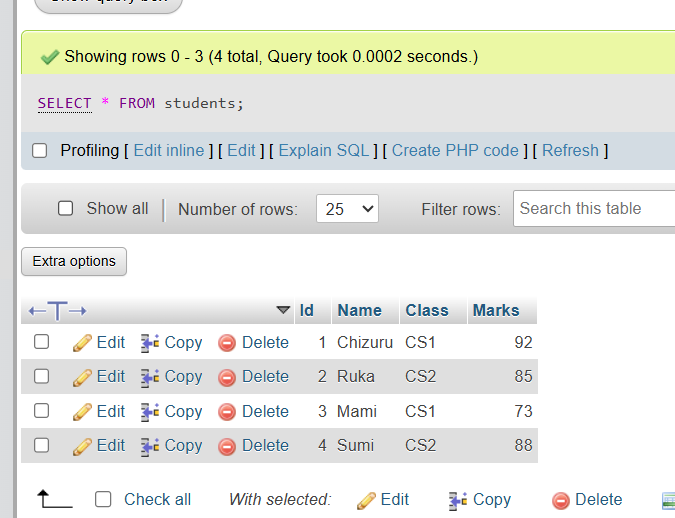
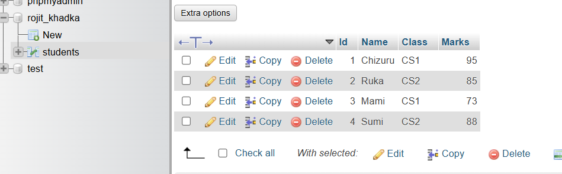
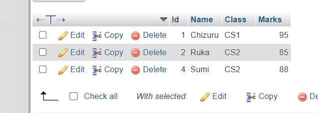

Chapter 2: Past Year Questions
Past Year Questions of DBMS (2020–2024 and Model Questions)
-
What is Database and DBMS?
A Database is a structured and organized collection of data stored electronically in a way that facilitates easy access, management, and updating of the data. For example, the student records of a university or the customer data of an e-commerce website are stored in databases.
A Database Management System (DBMS) is specialized software that acts as an intermediary between the users and the database. It manages data storage, retrieval, security, and integrity while allowing users to interact with the data using queries and commands.
Advantages of DBMS:
- Reduction of Data Redundancy: DBMS reduces duplicate data by storing it centrally and using keys to reference related data.
- Improved Data Integrity: Constraints and rules enforce consistency of data entries.
- Data Sharing: Multiple users and applications can access the same database simultaneously without conflicts.
- Data Security: Access permissions control who can view or modify data, protecting sensitive information.
- Backup and Recovery: DBMS provides tools to back up data regularly and recover it in case of failures.
Disadvantages of DBMS:
- High Initial Cost: Implementing a DBMS requires investment in software, hardware, and training.
- Complexity: The system can be complex to design and manage, requiring skilled administrators.
- Performance Overhead: The additional layer between users and data may cause slower responses in some cases.
-
Differentiate between File Processing System and DBMS:
File processing systems store data in separate files with minimal connection, while DBMS stores data in a unified database with relational links.
- Data Redundancy: In file systems, duplicate data is common because files are managed independently. DBMS centralizes data to minimize redundancy.
- Data Sharing: File systems are generally single-user and do not support concurrent access easily, whereas DBMS supports multi-user environments.
- Data Integrity: File systems lack mechanisms to enforce data consistency; DBMS enforces integrity constraints.
- Security: File systems provide basic file permissions, while DBMS implements detailed security policies for different data parts.
- Data Independence: Changes in file structure require program changes in file systems; DBMS abstracts the data layer, so application programs are less affected by structural changes.
-
Explain the different models of DBMS with advantages and disadvantages:
- Hierarchical Model: Organizes data in a tree-like structure where each child has one parent. It's fast and efficient for one-to-many relationships but rigid because restructuring data is hard. It’s less flexible for complex queries.
- Network Model: Data is organized as a graph, allowing many-to-many relationships. It offers more flexibility than hierarchical but has a complex design and difficult maintenance.
- Relational Model: Represents data as tables with rows and columns. It supports easy data manipulation with SQL, enforces data integrity via keys, and is widely used. However, very large or complex queries may have performance issues.
- Entity-Relationship Model: More of a conceptual design model using ER diagrams to visually represent database structure, relationships, and constraints, often used during database design phase before implementation.
-
What is a relational database? How is it different from other database models?
A Relational Database stores data in tables (called relations). Each table has rows (records) and columns (fields). Tables can be linked using keys such as primary keys and foreign keys.
Unlike hierarchical models (which use parent-child tree structures) and network models (which use graphs), relational databases provide a more flexible way to represent data with set theory and relational algebra.
The use of SQL (Structured Query Language) in relational databases makes data querying and manipulation standardized, which is a major advantage over other models.
-
What is data redundancy? How does DBMS help in reducing it?
Data redundancy occurs when the same piece of data is stored unnecessarily at multiple locations. This wastes storage space and increases the risk of inconsistent data.
DBMS reduces redundancy by centralizing data storage and using normalization techniques. Normalization divides data into related tables and establishes links, so each data item is stored once and referenced as needed.
For example, instead of storing a student's department name in every student record, a department table is created and linked by department IDs.
-
Differentiate between centralized and distributed database systems:
- Centralized Database: Data is stored and managed at a single location. It is easier to control but has risks of single-point failures and can be slower for distant users.
- Distributed Database: Data is stored across multiple physical locations connected by a network. This improves reliability and performance by allowing local access but adds complexity for synchronization and consistency.
- Reliability: Centralized DB has a single failure point; distributed DB can continue operating if some nodes fail.
- Data Access: Centralized systems may suffer latency; distributed systems provide faster local access but require complex coordination.
-
Who is Database Administrator (DBA)? What are the major responsibilities of DBA?
The Database Administrator (DBA) is a professional responsible for the overall management of the database system. The DBA ensures data availability, security, and performance.
Major responsibilities include:
- Installing and configuring the DBMS software.
- Creating and managing user accounts and roles with appropriate access privileges.
- Designing and maintaining database schemas and objects.
- Performing regular backups and planning disaster recovery.
- Monitoring database performance and tuning queries for efficiency.
- Ensuring data integrity and implementing security measures against unauthorized access.
-
Define normalization. Explain 1NF, 2NF and 3NF with suitable examples:
Normalization is the process of organizing database tables to minimize redundancy and dependency by dividing large tables into smaller ones and defining relationships between them.
- 1NF (First Normal Form): Eliminate repeating groups or arrays. Each field contains only atomic values.
Example: A student table with multiple phone numbers stored in one column violates 1NF. Splitting phone numbers into separate rows fixes this.
- 2NF (Second Normal Form): Achieved when 1NF is met and all non-key attributes are fully functionally dependent on the entire primary key.
Example: If a composite key is (StudentID, CourseID), attributes depending only on StudentID should be moved to a separate table.
- 3NF (Third Normal Form): Achieved when 2NF is met and all attributes are directly dependent on the primary key, not on other non-key attributes.
Example: If 'DepartmentName' depends on 'DepartmentID' and 'DepartmentID' depends on 'StudentID', separate department info into its own table.
-
Explain the terms: primary key, foreign key, and candidate key with examples:
- Primary Key: A unique identifier for each record in a table. Example: StudentID uniquely identifies students.
- Foreign Key: A field in one table that refers to the primary key in another table, establishing a relationship. Example: CourseID in an enrollment table linking to courses.
- Candidate Key: A set of attributes that could serve as a primary key; one is chosen as primary key.
Example: Both StudentEmail and StudentID might uniquely identify a student, making them candidate keys.
-
What is SQL? Explain its components and common functions:
SQL (Structured Query Language) is a language used to communicate with and manage data stored in relational databases. It allows users to create, retrieve, update, and delete data efficiently using structured commands.
Components of SQL:
- DDL (Data Definition Language): Used to define and modify database structures. Examples:
CREATE, ALTER, DROP.
- DML (Data Manipulation Language): Deals with data manipulation. Examples:
INSERT, UPDATE, DELETE.
- DQL (Data Query Language): Used to fetch data from a database. Example:
SELECT.
- DCL (Data Control Language): Controls access. Examples:
GRANT, REVOKE.
- TCL (Transaction Control Language): Handles transactions. Examples:
COMMIT, ROLLBACK.
Common SQL Functions:
- Aggregate Functions:
SUM(), AVG(), COUNT(), MAX(), MIN()
- String Functions:
UPPER(), LOWER(), LENGTH(), CONCAT()
- Date Functions:
NOW(), CURDATE(), YEAR(), DATEDIFF()
-
Write SQL commands to perform the following operations:
-
a. Create a table named
students:
CREATE TABLE students (
Id INT PRIMARY KEY,
Name VARCHAR(50),
Class VARCHAR(10),
Marks INT
);
Explanation: This command creates a table for students with 4 fields, uniquely identified by Id.
Output Screenshot:

-
b. Insert records into the
students table:
INSERT INTO students VALUES (1, 'Chizuru', 'CS1', 92);
INSERT INTO students VALUES (2, 'Ruka', 'CS2', 85);
INSERT INTO students VALUES (3, 'Mami', 'CS1', 73);
INSERT INTO students VALUES (4, 'Sumi', 'CS2', 88);
Explanation: Four entries are added to the table, each representing a character from *Rent-A-Girlfriend* as a student.
Output Screenshot:

-
c. Display all records from the
students table:
SELECT * FROM students;
Explanation: This query shows all rows and columns in the students table.
Output Screenshot:

-
d. Update the marks of the student whose name is 'Chizuru' to 95:
UPDATE students SET Marks = 95 WHERE Name = 'Chizuru';
Explanation: This updates the marks of Chizuru to 95 in the table.
Output Screenshot:

-
e. Delete the record of the student with id = 3 (Mami):
DELETE FROM students WHERE Id = 3;
Explanation: Mami’s record (id 3) will be deleted from the students table.
Output Screenshot:

-
Define the following terms:
-
Data Dictionary:
A Data Dictionary is a centralized repository that contains metadata — data about data. It defines the structure, relationships, and constraints of data in a database. It helps administrators and developers understand how data is organized and used in the system.
-
Primary Key:
A Primary Key is a unique identifier for each record in a table. It ensures that no two rows in the table have the same value in that column or combination of columns.
Example: In a student table, the Student ID can be the primary key as it uniquely identifies each student.
-
Relationship:
A Relationship in DBMS refers to how tables are connected using keys. These connections define how data in one table relates to data in another.
Types: One-to-One, One-to-Many, and Many-to-Many.
-
Data Manipulation Language (DML):
DML consists of commands used to manipulate data within existing tables. It includes statements like SELECT, INSERT, UPDATE, and DELETE.
-
Structured Query Language (SQL):
SQL is a standard language used to communicate with relational databases. It allows users to create, manage, and manipulate data efficiently. It includes both DDL and DML commands.
-
Data Integrity:
Data Integrity ensures the accuracy, consistency, and reliability of data throughout its lifecycle. It is maintained using constraints like primary keys, foreign keys, and validation rules.
-
Data Definition Language (DDL):
DDL includes SQL commands used to define the structure of the database. It consists of commands like CREATE, ALTER, DROP, and TRUNCATE.
-
Data Security:
Data Security involves protecting the database against unauthorized access, data breaches, and cyber threats. Techniques include authentication, access control, encryption, and regular backups.
-
Database System:
A Database System is a combination of the database, DBMS software, users, and procedures that work together to store, manage, and retrieve data effectively.